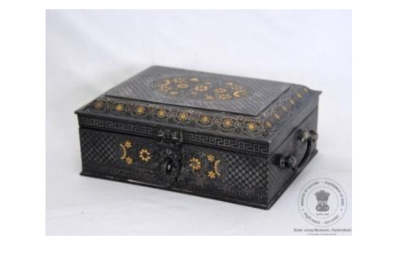

🔇 Is bhasha me is vastu ka audio abhi uplabdh nahi hai.
अभिग्रहण संख्या: XXXIII-117 पानदान

अभिग्रहण संख्या: XXXIII-117
यह आयताकार पानदान है, जिसके दोनों ओर पकड़ने के लिए हत्थे लगे हैं। इसका ढक्कन कुंडी सहित जुड़ा हुआ है। यह पानदान चाँदी, ताँबे तथा जस्ता मिश्रधातु से बना है। इसके भीतर हत्थों वाली एक ट्रे है और उसके नीचे आठ खाने बने हुए हैं। ढक्कन पर अंडाकार पट्टिका में पुष्प-लता की आकृति बनी है, जिसके चारों ओर सितारा आकृति का अलंकरण है। किनारों पर पुष्प-लता और चाबी जैसी आकृतियों की सजावटी पट्टी बनी हुई है। इसी प्रकार की कारीगरी पानदान के बाहरी भाग पर भी दिखाई देती है। ढक्कन के भीतर चाँदी और सोने की जड़ाई से बने अलंकरण हैं। ढक्कन के अंदर अंग्रेज़ी और उर्दू दोनों भाषाओं में एक अभिलेख अंकित है। यह पानदान भारत के कर्नाटक राज्य के बीदर का है। इसका निर्माण वर्ष 1953 ईस्वी में किया गया था।
Acc No: XXXIII-117 Pandan (Betel Box)
Acc No: XXXIII-117
A rectangular Pandan (betel nut box) with handles on both sides and a hinged lid with a latch. Crafted from zinc alloy, copper, and silver components. It contains removable trays with handles and eight storage compartments underneath. The lid features an oval panel filled with floral vines surrounded by star motifs, with a border of floral creepers and key patterns. Designs are inlaid in silver and gold. Inscriptions in English and Urdu are engraved inside the lid. Originating from Bidar, Karnataka, India, it was crafted in 1953 CE.
10. పాండన్
Acc No: XXXIII-117
ఇరువైపులా హ్యాండిల్స్, కీలుతో కూడిన మూత మరియు ఒక మూత కలిగిన దీర్ఘచతురస్రాకార పాన్డాన్. ఈ పాన్డాన్ వెండి, రాగి భాగాలు మరియు జింక్ మిశ్రమ లోహంతో తయారు చేయబడింది. హ్యాండిల్స్ ఉన్న ఈ పళ్ళెంలో లోపల మరియు కింద ఎనిమిది అరలు ఉన్నాయి. మూతపై పూల తీగలతో కూడిన అండాకారపు పలక ఉంది, దాని చుట్టూ నక్షత్రపు ఆకృతి, మరియు పూల తీగలు, తాళాల ఆకృతులతో కూడిన అంచు ఉన్నాయి. ఇదే విధమైన పనితనం పాన్డాన్ శరీరం చుట్టూ కూడా ఉంది. మూత లోపల శాసనాలు ఉన్నాయి. ఈ ఆకృతులు వెండి మరియు బంగారంతో పొదిగి ఉన్నాయి. మూత లోపల ఆంగ్లం మరియు ఉర్దూ భాషలలో శాసనాలు ఉన్నాయి. ఈ పాన్డాన్ భారతదేశంలోని కర్ణాటక రాష్ట్రంలోని బీదర్కు చెందినది. ఇది క్రీ.శ. 1953లో తయారు చేయబడింది.
۱۰. پان دان
اندراج نمبر: XXXIII-117
یہ چوکور پاندان ہے، جس کے دونوں جانب دستے لگے ہوئے ہیں اور اس کا ڈھکن قبضوں اور کنڈی کے ساتھ بنایا گیا ہے۔ یہ پاندان چاندی اور تانبے کے اجزا سے تیار کیا گیا ہے، جبکہ اس میں جست کے مرکب دھات کا بھی استعمال کیا گیا ہے۔ اس کے اندر دستوں والی ایک ٹرے موجود ہے اور اس کے نیچے آٹھ خانے بنائے گئے ہیں۔ ڈھکن پر بیضوی شکل کے ایک پینل میں پھولوں اور بیل بوٹوں کے دلکش نقش بنائے گئے ہیں، جن کے گرد ستاروں کے نمونے، پھولوں کی بیلیں اور چابی نما حاشیہ دکھائی دیتا ہے۔ اسی طرز کی نفیس کاریگری پاندان کے اطراف بھی نمایاں ہے۔ اس پر بنائے گئے نقش چاندی اور سونے کی جڑائی سے مزین ہیں۔ ڈھکن کے اندر اردو اور انگریزی زبان میں ایک کتبہ بھی موجود ہے۔ یہ پاندان بیدر، کرناٹک، ہندوستان کی بیدری فن کاری سے تعلق رکھتا ہے اور 1953ء میں تیار کیا گیا تھا۔
অ্যাক্সেস নং: XXXIII-117 পানদানি
अभिग्रहण संख्या: XXXIII-117
এটি একটি আয়তাকার পানদানি, যার দুপাশে হাতল এবং কব্জা-যুক্ত ঢাকনায় একটি ল্যাচ রয়েছে। পানদানিটি রূপা, তামা এবং দস্তার সংকর ধাতু দিয়ে তৈরি। এর ভেতরে হাতল-সহ একটি ট্রে এবং তার নিচে আটটি খোপ রয়েছে। ঢাকনার ওপরের অংশে ডিম্বাকৃতি প্যানেলে লতাপাতার নকশা এবং তার চারপাশ ঘিরে রয়েছে তারার নকশা; এছাড়া এর বર્ડারে লতাপাতা ও চাবির নকশা খোদাই করা হয়েছে। পানদানিটির গায়েও একই ধরনের কারুকাজ দেখা যায়। ঢাকনার ভেতরের অংশে লেখা রয়েছে। নকশাগুলো রূপা ও সোনা দিয়ে খচিত। ঢাকনার ভেতরের দিকে ইংরেজি ও উর্দু ভাষায় একটি লিপি খোদাই করা আছে। এই পানদানিটি ভারতের কর্ণাটক রাজ্যের বিদার অঞ্চলের। এটি ১৯৫৩ খ্রিস্টাব্দে তৈরি করা হয়েছিল।
Acc No: XXXIII-117 પાનદાન
अभिग्रहण संख्या: XXXIII-117
બિગુલ કવર અને બંને બાજુ હેન્ડલ ધરાવતું લંબચોરસ પાનદાન. આ પાનદાન ચાંદી અને તાંબાના ઘટકો તથા ઝિંક એલોય (જસતની મિશ્રધાતુ)માંથી બનાવવામાં આવ્યું છે. તેની અંદર હેન્ડલવાળી ટ્રે છે અને નીચે આઠ ખાનાં છે. ઢાંકણ પર તારાની ભાતથી ઘેરાયેલું ફૂલની વેલવાળું અંડાકાર પેનલ તથા ફૂલની વેલ અને કી-ડિઝાઇન (ચાવી આકારની ભાત)ની કિનારી છે. શરીરની આસપાસ પણ સમાન કારીગરી જોવા મળે છે. ઢાંકણની અંદરના ભાગમાં શિલાલેખો (લખાણો) છે. ડિઝાઇનો ચાંદી અને સોનામાં જડેલી છે. ઢાંકણની અંદર અંગ્રેજી અને ઉર્દૂ બંને ભાષામાં લખાણ (અભિલેખ) છે. આ પાનદાન બિદર, કર્ણાટક, ભારતનું છે અને તેનું નિર્માણ ઈ.સ. ૧૯૫૩માં કરવામાં આવ્યું હતું.
Acc No: XXXIII-117 ಪಾನ್ದಾನ್
अभिग्रहण संख्या: XXXIII-117
ಎರಡೂ ಬದಿಗಳಲ್ಲಿ ಹಿಡಿಗಳು ಮತ್ತು ಕೊಂಡಿಯನ್ನು (hasp) ಹೊಂದಿರುವ ಮುಚ್ಚಳವನ್ನು ಒಳಗೊಂಡಿರುವ ಆಯತಾಕಾರದ ಪಾನ್ದಾನ್ (ವಿಳ್ಯದ ಬಟ್ಟಲು) ಇದಾಗಿದೆ. ಈ ಪಾನ್ದಾನ್ ಅನ್ನು ಬೆಳ್ಳಿ ಮತ್ತು ತಾಮ್ರದ ಅಂಶಗಳು ಹಾಗೂ ಸತುವಿನ ಮಿಶ್ರಲೋಹದ ವಸ್ತುವಿನಿಂದ ಮಾಡಲಾಗಿದೆ. ಒಳಗಡೆ ಹಿಡಿಗಳನ್ನು ಹೊಂದಿರುವ ತಟ್ಟೆಗಳು (ಟ್ರೇಗಳು) ಹಾಗೂ ಅದರ ಕೆಳಗೆ ಎಂಟು ಖಾನೆಗಳು ಇವೆ. ಮುಚ್ಚಳದ ಮೇಲೆ ನಕ್ಷತ್ರಗಳ ನಮೂನೆಯೊಂದಿಗೆ ಹೂವಿನ ಬಳ್ಳಿಯ ಅಂಡಾಕಾರದ ಫಲಕವಿದೆ ಹಾಗೂ ಸುತ್ತಲೂ ಹೂವಿನ ಬಳ್ಳಿ ಮತ್ತು ಕೀ ವಿನ್ಯಾಸದ ಅಂಚು ಇದೆ. ಇದೇ ರೀತಿಯ ಕೌಶಲ್ಯದ ಕೆಲಸವು ದೇಹದ ಸುತ್ತಲೂ ಕಂಡುಬರುತ್ತದೆ. ಮುಚ್ಚಳದ ಒಳಭಾಗದಲ್ಲಿ ಶಾಸನಗಳಿವೆ. ವಿನ್ಯಾಸಗಳನ್ನು ಬೆಳ್ಳಿ ಮತ್ತು ಚಿನ್ನದಲ್ಲಿ ಕುಸುರಿ ಮಾಡಲಾಗಿದೆ. ಮುಚ್ಚಳದ ಒಳಭಾಗದಲ್ಲಿ ಇಂಗ್ಲಿಷ್ ಮತ್ತು ಉರ್ದು ಎರಡರಲ್ಲೂ ಶಾಸನವಿದೆ. ಈ ಪಾನ್ದಾನ್ ಭಾರತದ ಕರ್ನಾಟಕದ ಬೀದರ್ಗೆ ಸೇರಿದ್ದಾಗಿದೆ. ಇದನ್ನು ಕ್ರಿ.ಶ. 1953 ರ ವರ್ಷದಲ್ಲಿ ತಯಾರಿಸಲಾಗಿದೆ.
୧୦. ପାଣ୍ଡନ (Pandan)
Acc No: XXXIII-117
ଏହା ଏକ ଆୟତାକାର ପାନଦାନୀ, ଯାହାର ଉଭୟ ପାର୍ଶ୍ୱରେ ହ୍ୟାଣ୍ଡେଲ୍ ବା ମୁଠା ରହିଛି ଏବଂ ଏହାର ଢାଙ୍କୁଣିଟି କବ୍ଜା ଯୋଡ଼େଇରେ ଏକ ହାସ୍ପ୍ ସହିତ ଲାଗିରହିଛି। ଏହି ପାନଦାନୀଟି ତମ୍ବା ଏବଂ ରୂପା ଓ ଜିଙ୍କ୍ ମିଶ୍ରଣରେ ତିଆରି ହୋଇଛି। ଏହାର ଭିତରେ ହ୍ୟାଣ୍ଡେଲ୍ ଥିବା ଟ୍ରେ ରହିଛି ଏବଂ ଏହା ଆଠୋଟି ଭିନ୍ନ ଭିନ୍ନ ବିଭାଗରେ ବିଭକ୍ତ।
ଏହାର ଢାଙ୍କୁଣି ଉପରେ ତାରା ଆକାରର ଚିହ୍ନ ଦ୍ୱାରା ଘେରି ହୋଇଥିବା ଫୁଲ ଲତାର ଏକ ଅଣ୍ଡାକାର ପ୍ୟାନେଲ୍ ରହିଛି, ଯାହା ଚାରିପଟେ ଫୁଲର ଲତା ଏବଂ ଚାବି କାଟିବା ପରି ଛବିର ଏକ ପଟି ବା ବର୍ଡର ରହିଛି। ପାନଦାନୀର ଶରୀର ଚାରିପଟେ ମଧ୍ୟ ସମାନ ପ୍ରକାରର ସୁନ୍ଦର କାରିଗରୀ ଦେଖିବାକୁ ମିଳେ। ଏହି ପାନଦାନୀର ଢାଙ୍କୁଣି ଭିତରେ ଇଂରାଜୀ ଏବଂ ଉର୍ଦ୍ଦୁ ଭାଷାରେ କିଛି ଲେଖା ରହିଛି। ଏଥିରେ ଥିବା ସମସ୍ତ ଚିତ୍ରଗୁଡ଼ିକୁ ରୂପା ଏବଂ ସୁନାରେ ଅତି ସୁନ୍ଦର ଭାବରେ ଖଚିତ। ଏହି କଳାକୃତିଟି କର୍ଣ୍ଣାଟକର 'ବିଦର' ସହରର ଅଟେ ଏବଂ ଏହାକୁ ୧୯୫୩ ମସିହାରେ ତିଆରି କରାଯାଇଥିଲା।
ଏହାର ଢାଙ୍କୁଣି ଉପରେ ତାରା ଆକାରର ଚିହ୍ନ ଦ୍ୱାରା ଘେରି ହୋଇଥିବା ଫୁଲ ଲତାର ଏକ ଅଣ୍ଡାକାର ପ୍ୟାନେଲ୍ ରହିଛି, ଯାହା ଚାରିପଟେ ଫୁଲର ଲତା ଏବଂ ଚାବି କାଟିବା ପରି ଛବିର ଏକ ପଟି ବା ବର୍ଡର ରହିଛି। ପାନଦାନୀର ଶରୀର ଚାରିପଟେ ମଧ୍ୟ ସମାନ ପ୍ରକାରର ସୁନ୍ଦର କାରିଗରୀ ଦେଖିବାକୁ ମିଳେ। ଏହି ପାନଦାନୀର ଢାଙ୍କୁଣି ଭିତରେ ଇଂରାଜୀ ଏବଂ ଉର୍ଦ୍ଦୁ ଭାଷାରେ କିଛି ଲେଖା ରହିଛି। ଏଥିରେ ଥିବା ସମସ୍ତ ଚିତ୍ରଗୁଡ଼ିକୁ ରୂପା ଏବଂ ସୁନାରେ ଅତି ସୁନ୍ଦର ଭାବରେ ଖଚିତ। ଏହି କଳାକୃତିଟି କର୍ଣ୍ଣାଟକର 'ବିଦର' ସହରର ଅଟେ ଏବଂ ଏହାକୁ ୧୯୫୩ ମସିହାରେ ତିଆରି କରାଯାଇଥିଲା।
१०. पानदान
कार्यवाही क्र: XXXIII-117
दोन्ही बाजूंना मुठी आणि कडीकोयंडा असलेले बिजागरीचे झाकण असलेले आयताकृती पानदान. हे पानदान चांदी व तांब्याचे घटक आणि जस्ताच्या मिश्रधातूपासून बनवले आहे. आत मुठी असलेल्या तबकड्या असून खाली आठ कप्पे आहेत. झाकणावर फुलांच्या वेलींची अंडाकृती चौकट असून, त्यांच्याभोवती चांदण्यांची नक्षी तसेच फुलांच्या वेली आणि चावीच्या नक्षीची किनार आहे. मुख्य भागाभोवती अशीच कारागिरी पाहायला मिळते. झाकणाच्या आतल्या बाजूस लेख आहेत. नक्षी चांदी आणि सोन्यात जडवलेली आहे. झाकणाच्या आतल्या बाजूस इंग्रजी आणि उर्दू अशा दोन्ही भाषांमध्ये एक लेख आहे. हे पानदान बिदर, कर्नाटक, भारत येथील आहे. याची निर्मिती इ.स. १९५३ या वर्षात झाली आहे.
Acc No: XXXIII-117 വെറ്റിലച്ചെല്ലം
Acc No: XXXIII-117
രണ്ടു വശങ്ങളിലും പിടികളുള്ളതും, കൊളുത്തോടു കൂടിയ തിരിക്കാവുന്ന അടപ്പുള്ളതുമായ ചതുരാകൃതിയിലുള്ള വെറ്റിലച്ചെല്ലം. വെറ്റിലച്ചെല്ലം നിർമ്മിച്ചിരിക്കുന്നത് ചെമ്പ്, വെള്ളി ഘടകങ്ങൾ കൊണ്ടും സിങ്ക് ലോഹസങ്കരം എന്ന വസ്തു ഉപയോഗിച്ചുമാണ്. ഇതിനുള്ളിൽ പിടികളുള്ള ട്രേകളും താഴെയായി എട്ട് അറകളുമുണ്ട്. അടപ്പിന് മുകളിലായി നക്ഷത്ര രൂപങ്ങളാൽ ചുറ്റപ്പെട്ട, പൂവള്ളികൾ നിറഞ്ഞ ഒരു അണ്ഡാകൃതിയിലുള്ള പാനലും, ഒപ്പം പൂവള്ളികളും കീ ഡിസൈനുമുള്ള ബോർഡറുമുണ്ട്. സമാനമായ കൊത്തുപണികൾ ഇതിന്റെ പുറംഭാഗത്തും കാണാം. അടപ്പിന്റെ ഉള്ളിലായി ലിഖിതങ്ങളുണ്ട്. വെള്ളിയിലും സ്വർണ്ണത്തിലുമാണ് ഡിസൈനുകൾ പതിപ്പിച്ചിരിക്കുന്നത്. മൂടിയുടെ ഉള്ളിലായി ഇംഗ്ലീഷിലും ഉർദുവിലുമുള്ള ഒരു ലിഖിതം കാണാം. ഈ വെറ്റിലച്ചെല്ലം ഇന്ത്യയിലെ കർണാടകയിലുള്ള ബിദാറിൽ നിന്നുള്ളതാണ്. ഇത് എഡി 1953-ൽ നിർമ്മിക്കപ്പെട്ടതാണ്.
10. வெற்றிலைப் பெட்டி (Pandan)
Acc No: XXXIII-117
இது இருபுறமும் கைப்பிடிகளும் பூட்டும் இணைக்கப்பட்ட மூடியும் கொண்ட செவ்வக வடிவப் பாக்குப்பெட்டி ஆகும். இப்பாக்குப் பெட்டி வெள்ளி, செம்புப் பொருட்களாலும், துத்தநாக உலோகக் கலவையால் செய்யப்பட்டது. உட்புறத்தில் கைப்பிடிகளுடன் கூடிய தட்டுகளும், அதன் கீழே எட்டு அறைகளும் உள்ளன. மூடியின் மீது மலர்க்கொடி நீள் வட்ட வடிவ பலகையும், அதைச் சுற்றி நட்சத்திர அமைப்பும், மலர்க்கொடி மற்றும் சாவி வடிவ விளிம்பும் காணப்படுகின்றன. உடற்பகுதியைச் சுற்றிலும் இதே போன்ற கைவினை வேலைப்பாடுகள் உள்ளன. மூடியின் உட்புறத்தில் பொறிப்புகள் உள்ளன. வடிவங்கள் தங்கம் மற்றும் வெள்ளியால் பதிக்கப்பட்டுள்ளன. மூடியின் உட்புறத்தில் ஆங்கிலம் மற்றும் உருது ஆகிய இரு மொழிகளிலும் ஒரு பொறிப்பு உள்ளது. இப்பாக்குப்பெட்டி இந்தியாவின் கர்நாடக மாநிலத்தில் உள்ள பீதரைச் சேர்ந்தது. இது கி.பி. ஆயிரத்து தொள்ளாயிரத்து ஐம்பத்து மூன்றாம் ஆண்டில் தயாரிக்கப்பட்டது.